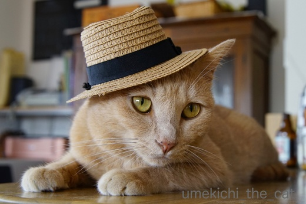
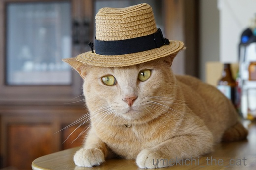
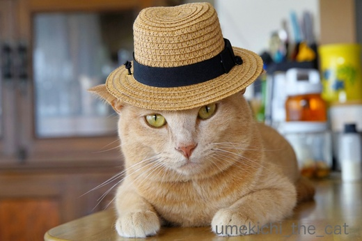
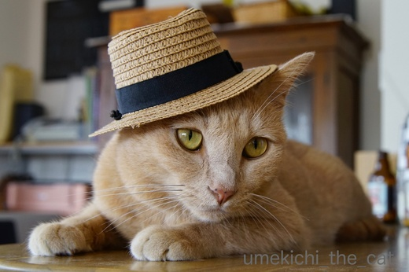
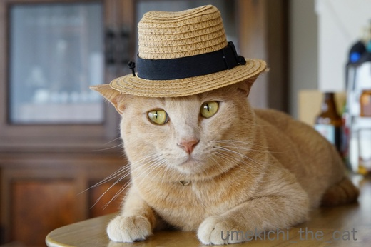
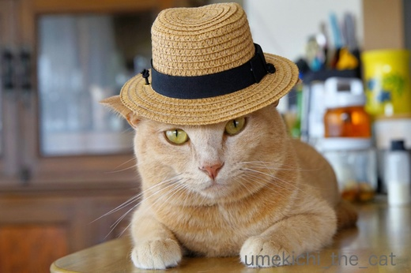

ボルサリーノ for にゃんず 日本限定発売！？ [梅吉]
「アンダルシアに憧れて」の歌詞に登場したり大臣のあそーさん、次元大介がご愛用なことから
日本でも有名なイタリアの老舗高級帽子ブランド、ボルサリーノ。
なんと！にゃんこ向けの帽子が日本某所で発売！？！？
どんな帽子なのかモデルの梅吉さんに披露していただきましょう。

![[猫]](https://blog.ss-blog.jp/_images_e/101.gif) ななめかぶりすると だんでーやで。 ぼぎー いうおっちゃんもにげだすやろ。
ななめかぶりすると だんでーやで。 ぼぎー いうおっちゃんもにげだすやろ。

めんちきるとな はくりょくまんてんや。 かぽね いうおっちゃんもたじたじや。

ちょっとあそんでみたで。たろー いうおっちゃんよりいけてるやろ。

まえめにがぶるとな ろいやる なかんじや。やんごとないうまれは かくせるもんやない。
以上、本家ボルサリーノとは全く関係ない3coinsでゲットしたお帽子でした〜(≧艸≦)
この帽子、おとーさんの帽子と通じるものが。

梅吉さんがその気なうちに素敵な２ショット撮りましょうよ〜。

おとーさん、それはあかん・・・・・
おとーさん首にタオルを巻いたままの痛恨のミス。
庭仕事のおっちゃんと首の後ろに麦わら帽子を引っ掛けた
夏休みの少年の写真になっちゃいました(^▽^;)
 ↑ガブッと一押し↑
↑ガブッと一押し↑
少しでも入っていれば満足ってことでしょうか。
日本でも有名なイタリアの老舗高級帽子ブランド、ボルサリーノ。
なんと！にゃんこ向けの帽子が日本某所で発売！？！？
どんな帽子なのかモデルの梅吉さんに披露していただきましょう。




以上、本家ボルサリーノとは全く関係ない3coinsでゲットしたお帽子でした〜(≧艸≦)
この帽子、おとーさんの帽子と通じるものが。

梅吉さんがその気なうちに素敵な２ショット撮りましょうよ〜。

おとーさん首にタオルを巻いたままの痛恨のミス。
庭仕事のおっちゃんと首の後ろに麦わら帽子を引っ掛けた
夏休みの少年の写真になっちゃいました(^▽^;)
少しでも入っていれば満足ってことでしょうか。

カフェオレ色の梅吉

梅吉 2023年8月10日 永眠


梅吉と出会った譲渡会

犬猫の理由なき殺処分ゼロ
妄想広告
UMEKICHI 光

爆発的に早い！
時々攻撃的！
Thanks to Mr.Boss365
爆発的に早い！
時々攻撃的！
Thanks to Mr.Boss365

なんて良くお似合いなこと 親子でお揃い すばらしい 羨ましい
いいなぁ 男同士
by テオ (2017-07-10 15:34)
梅吉くん、役者だわ。
表情までギャングだわ～。男前だよ～＞＜
3枚目の目線がてへっ♪って感じで素がでちゃったかな？
おと～さんの帽子もカッコいい！と、思ったら
・・・痛恨のミス。
でも、ほのぼの。夏の思い出っぽくていい写真です(^-^)
by emi (2017-07-10 16:38)
梅吉さん♪ とても似合ってますねぇ～(#^.^#)
どの表情も可愛いです♪
お父さんとの２ショット！
夏の思い出ですね（笑
by きぃ (2017-07-10 16:54)
2枚目の三白眼たまりません！
キャリーは思ったより暑かったのかな?頭は冷やして腰から下は冷やさない。さすがです(#^.^#)
by palpal (2017-07-10 17:34)
テオさん＞お褒めいただきありがとうございます。
仲間に入れなかったおかーさん、ちょっぴりジェラシーですよー。
テオさんとこはエト嬢さんとペアルックいかがですか♡
emiさん＞おみごとです〜！梅吉の素は３枚目のまさに三枚目(≧艸≦)
素は隠しきれませんねぇ・・・
おっとは「カッコイイ写真撮ってもらおうかな〜」とか言ってたのですが
本人も私もタオルには気が回らず。
夏場はいつもこのスタイルですから馴染みすぎていました (^▽^;)
夏の思い出・・・昆虫採集の親子ってことで！wwwww
きぃさん＞まさに夏の思い出。
昆虫採集の親子、と言う設定にすることにしましたww
帽子、おとなしく被っていました。
軽いものはいけるらしい・・・・・
palpalさん＞目つき悪いでしょーＯ(≧▽≦)Ｏ猫マフフィアww
もっと涼しい場所があるんだから無理してキャリーに寝なくてもいいのーって
思っているんですが、1日一度は入って寝なければいけないらしい(^▽^;)
by ちぃ (2017-07-10 18:59)
梅吉君、おとなしくモデルをやっているのが健気で可愛いですね。
大阪弁の解説が、私の心に刺さります（笑）
私も感情表現の時など、よく大阪弁で表現します。
気持ちがグッとはいるんですわ！
by うめむす (2017-07-10 19:40)
梅吉君、表情豊かで、帽子が似合いますねぇ♪
by yamachan (2017-07-10 20:04)
親子でおそろですか！梅吉ちゃんなかなかお似合いですね～
by みぃにゃん (2017-07-10 20:35)
や～ん、親子で帽子のダンディツーショット♪ 憧れます(*^▽^*)
梅吉さん、本当によくお似合い。ボギーのおっちゃんよりずっとかっこいいですよ！！
ウチでやったら・・・フーテンの寅さんとカールおじさんになりそうだからやめておきます(-_-メ)
by ゆきち (2017-07-10 21:06)
ジュリー～！
って歳がばれますね(^^;)
by kou (2017-07-10 21:13)
帽子を落とさないように頑張ってる様に見えます。
カッコいいです(^^♪
by riverwalk (2017-07-10 21:15)
おっ、ダンディーですね、梅さん。
しかもお揃いで。^^)
でも、こんな小さな帽子があるとは知りませんでした。
あと、寅さんにも見えてしまうのは私のトシのせいですね。^^;
by yes_hama (2017-07-10 21:37)
おぉ、さすが「漢 梅吉さん」粋な帽子がとってもお似合いですねぇ♪( ´▽｀)
「かぽね」も真っ青の写真がツボりました*\(^o^)/*
お父さんとの２ショットも仲良しさんで良いなぁ♪( ´▽｀)
by ニッキー (2017-07-10 21:38)
梅吉さん、おとなしくかぶっていますね〜
全部のコメントが面白かったのです。
迫力満点の顔は中々でした（笑）
by kiki (2017-07-10 22:08)
とーーっても似合う！伊達男、梅ちゃん(＞▽＜)きゃー♪
パパ様は・・・ムハハ！確かに首のタオルが痛恨、でしたにゃ。でも、愛があるからいいね♡
by Ginger (2017-07-10 22:19)
ベルモンド＆梅吉共演 〜
遂に映画デビューですね。カッコいい！^ ^
by KENT0mg (2017-07-11 05:46)
良い帽子ですね。
ホントにニャンコさん用？
サイズ的には赤ちゃんでも無理っぽいような＾＾；
by ぽちの輔 (2017-07-11 06:28)
お父さんとのショットの時の顔が可愛い♡♡
さすが梅吉さん！
フーテンの寅さんにならないのはイケメンだからかな？
by muku (2017-07-11 09:02)
梅吉君、似合う似合う！！
3coins に売ってるのね。行かなくちゃー！
3coins に、10日から発売された猫ちゃん模様のグッズ、おともだちの猫ちゃんがモデルなの。なので見に行かなくちゃ♪
by リュカ (2017-07-11 13:27)
うめむすさん＞基本、被り物は嫌がるのですが
軽いものは振り落とされるまで乗せて置ける、という感じです^^;
大阪弁、我が家で大阪弁ネイティブは梅吉のみ。
私の通訳がおかしい時があるかもしれませんので
「ここ、おかしいやん！」のツッコミ大歓迎で〜す(^_－)☆
yamachanさん＞梅吉なかなかやるでしょー(≧▽≦)
甚平も着せてみたいけどなぁ、無理^^;
みぃにゃんさん＞おそろなんですよー。一緒に外出できなくて残念！！
ゆきちさん＞いえいえ・・・我が家もカールおじさんと寅さんですわww
カールおじさんはおっとのいでたちまんまで
梅吉はラクダの腹巻があれば完璧ですねっ。
二人のツーショットにちょっとジェラシーの私です(⌒_⌒;
kouさん＞ふふふ、「カサブランカ・ダンディー」ですね＾＾
だいじょうぶ！おそらく同じ世代ですよ〜ヾ(*ΦωΦ)ﾉ
riverwalkさん＞帽子は２〜３度振り落とされたのですが
「しゃーないわ、ほんまに・・・」と付き合ってくれました＾＾
近々ササミでも振舞って差し上げないと・・・
yes_hamaさん＞帽子はお店を通り過ぎようとした時に視界の端に・・・
もう嬉しくて突進しちゃいました＾＾
3coinsにあったのですがこの帽子のほか甚平もありましたよ。
サイズ的にはどうみても猫用、じゃなかったら超小型犬。
世の中猫流行りなのでターゲットを猫飼いに絞ったのかもしれませんねー。
おお、寅さん説・・・・・
ニッキーさん＞うまいこと仲良し写真が撮れました♪
あとは首にタオルさえなければ・・・・(^▽^;)
「かぽね」写真おかげさまで好評なんです。
今の所、年末の梅吉フォトブックの表紙候補No. 1で〜す！
kikiさん＞梅吉の極悪顔、皆様に好評で〜す（・∀・）
被り物はダメだと思っていましたが
軽いものなら少しの間おとなしくしている事がわかりました（ﾆﾔﾘ・・・・
Gingerさん＞梅吉、思わぬ伊達男っぷりを披露してくれました。
これを見て ボルサリーノ・ジャパン（ジャポネ、かな）、
猫ラインを立ち上げてくれないかなぁ(≧艸≦)
首タオル、ほのぼの度は抜群ですよね(^_－)☆
KENT0mgさん＞おお、おフランス方面からもお誘いが！！
カンヌのレッドカーペッドはそう遠くないかもしれません(*>艸<)
ぽちの輔さん＞3coinsで買ったのですがペット用とも
子供用とも表記はありませんでした。
が、新生児でも無理、犬にもちょっと小さいかな・・・
これはもう猫飼いを狙っていますよねー！
で、まんまとはまって買ってしまいました(^▽^;)
mukuさん＞「おとーさん、くびたおるはいけてないでー」と
横顔で語っていますよね＾＾
あ、mukuさんも寅さん説を！
いや、もう十分寅さんです。寅さんにしか見えなくなってきました〜ww
リュカさん＞帽子と一緒に甚平もありましたよ。
着る物は1000%無理だから買わなかったけど・・・・・ (^▽^;)
洋猫さんだけどあおくんなら似合いそうと思って見てましたww
お友達の猫さんがグッズのモデルに！
わ〜どんな商品なんだろう。手に入れたらブログにアップしてね＾＾
by ちぃ (2017-07-11 15:49)
梅吉さんだんでーだわぁ～♡
うちのが被ったら幼稚園児みたいになっちゃいます( ´艸｀)
太郎さんの１０００倍かっちょええわ＾＾
by Moon (2017-07-11 17:43)
帽子から連想したのは月亭可朝…チョビヒゲつけてほしいわあ。
いえいえ、梅吉君ダンディですよ。メンチ切って迫力満点、ちびりそう！(下品
おとーさんの後ろ姿とツーショットもいいですよ。
タオルも素敵！私も最近よく汗をかくのでタオルを首に巻いて、オッさんと呼ばれてます(とほほ
by BillK-ko (2017-07-11 18:05)
わあ、ちゃんとしたお帽子ですね～似合う、似合う！
ツーショット、かわいい～！
夏らしくて、親子の夏休み♪っぽい＾＾
by sana (2017-07-11 19:59)
Moonさん＞梅吉が「たろーもわるないんやけどな・・・」と
ほくそ笑んでおりました＾＾
BillK-koさん＞月亭可朝さん・・・だれ〜？で、ググってみましたよ＾＾
よし！次はメガネとチョビヒゲ用意しますわww
この時期の首タオル、私も自宅限定で愛用してま〜す。
だって汗ダラダラですものー。女子力は低いですけどね(*>艸<)
sanaさん＞本当に夏休みの親子ですよね＾＾
虫取り網と虫かごがあれば完璧！(≧艸≦)
by ちぃ (2017-07-11 21:31)
これがあの、マーシーの曲に出てきた帽子?！
って本気で信じて見てしまいました（笑）。
夏気分満点の「帽子を被った親子」のお写真、
「大小の帽子の親子」っぽいお写真、どちらも
ほのぼのしていい感じですね。
「お揃でお出かけ」写真も是非お願いします！
by うっかりくま (2017-07-11 23:38)
だんでーやね！！
by じゅらまろ (2017-07-12 12:45)
うっかりくまさん＞本気にさせちゃうなんて梅吉もやりますなぁ・・・(≧艸≦)
なんて、おふざけしちゃいました〜。
梅吉はパナマ帽でキメて見ましたが
マーシーの曲のヒトは「ダークなスーツ」と「いかしたクツ」なので
冬にたろーさんがかぶっていた様なウールのかっちょええので
キメたのかなぁと想像していました＾＾
そのへん、マーシーのご意見を伺って見たいですww
おそろでお出かけ写真、ハードル高いです！！(＠◇＠)
じゅらまろさん＞漢、梅吉！キメてみましたＯ(≧▽≦)Ｏ
by ちぃ (2017-07-12 15:26)
この帽子はナイス！1枚目の斜めにかぶった感じもめっちゃいいです！！
by ChatBleu (2019-03-14 06:54)